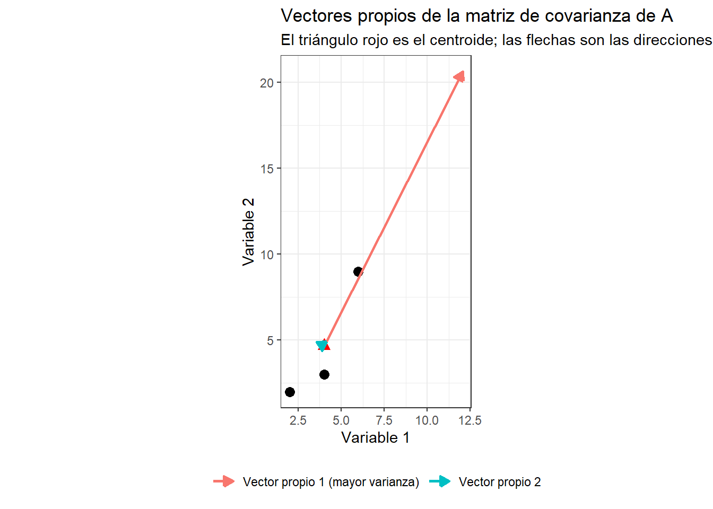

Este taller es la caja de herramientas matemática de los talleres 2.2b (PCA) y 2.2c (LDA). Cada operación que practiques aquí, con matrices pequeñas y números que puedes verificar a mano, la vas a volver a usar más adelante con los datos morfométricos reales de tus compañeros. Cada sección tiene una nota 🔗 que te dice exactamente dónde la vuelves a encontrar.
1. Operaciones matriciales básicas
1.1 Producto matricial
Este ejercicio incluye una demostración al final.
🔗 Conexión: la regla \((AB)' = B'A'\) que vas a demostrar aquí es la misma que le da sentido a productos como t.dif %*% cov.g.i %*% x en el taller de LDA: cuando trasponés un producto de matrices, el orden de los factores se invierte.
# Ejercicio 1# A (2,1,1,3)# B (1,4,2,5,0,3)# Calcular: (1) B'.A' (2) (A.B)' (3) Demostrar que B'.A' = (A'.B')# R./ CTRL + EnterA <-matrix(c(2,1,1,3), 2, 2, byrow =TRUE) # Matriz AB <-matrix(c(1,4,2,5,0,3), 2, 3, byrow =TRUE) # Matriz BA
[,1] [,2]
[1,] 2 1
[2,] 1 3
B
[,1] [,2] [,3]
[1,] 1 4 2
[2,] 5 0 3
# (1) B'.A' t(B) %*%t(A) # %*% representa el producto matricial,
[,1] [,2]
[1,] 7 16
[2,] 8 4
[3,] 7 11
# "t" corresponde a la transpuesta de una matriz.# Dimensión o tamaño = 3x2# (2) (A.B)'t(A %*% B)
Se calculará la determinante de dos matrices cuadradas.
🔗 Conexión: una matriz solo se puede invertir (sección 1.3) si su determinante es distinto de cero. Por eso se practica primero a calcularlo: es la “prueba” que garantiza que más adelante solve() va a funcionar, tanto en el PCA (matriz de covarianzas) como en el LDA (covarianza generalizada).
#-------------# Ejercicio 2# A (2,3,3,2)# B (1,4,2,5,0,3,1,4,2)# Calcular: Determinante de A y de B# R./A <-matrix(c(2,3,3,2), 2, 2, byrow =TRUE)B <-matrix(c(1,4,2,5,0,3,1,4,2), 3, 3, byrow =TRUE)A
[,1] [,2]
[1,] 2 3
[2,] 3 2
B
[,1] [,2] [,3]
[1,] 1 4 2
[2,] 5 0 3
[3,] 1 4 2
# Determinantesdet(A)
[1] -5
det(B)
[1] 0
1.3 Matriz inversa
Cálculo de una matriz inversa \((A)^{-1}\).
CTRL + L
🔗 Conexión: esta es exactamente la misma función solve() que vas a usar en el taller de LDA para invertir la matriz de covarianza generalizada (cov.g.i <- solve(cov.g)).
#------------# Ejercicio 3# A (5,2,2,2)# Calcular inversa de A# R./A <-matrix(c(5,2,2,2), 2, 2, byrow =TRUE)A
# Comprobación: A * A_1 = I (la matriz identidad)round(A %*% A_1, 10)
[,1] [,2]
[1,] 1 0
[2,] 0 1
1.4 Matriz de varianza - covarianza
🔗 Conexión: la fórmula de covarianza generalizada de aquí abajo, ponderada por el tamaño de cada grupo, es la misma fórmula que combina la variabilidad de hombres y mujeres en el taller de LDA (sección 2.5, con n.h y n.m en vez de 3 y 5).
# Calcular la covarianza (varianza-covarianza) para dos matrices rectangularesA <-matrix(c(2,2,4,3,6,9), 3, 2, byrow =TRUE)B <-matrix(c(2:10), 5, 2, byrow =TRUE)A
# (1) Covarianzas de cada matriz (c/grupo)cov.A <-var(A)cov.B <-var(B)round(cov.A, 1)
[,1] [,2]
[1,] 4 7.0
[2,] 7 14.3
round(cov.B, 1)
[,1] [,2]
[1,] 10 1.0
[2,] 1 8.2
# (2) Covarianza generalizada (S)# Se pondera cada matriz por (su número de filas - 1): A tiene 3 filas, B tiene 5cov.g <- (3* cov.A +5* cov.B) /8# cov.g corresponde a la covarianza generalizadacov.g
[,1] [,2]
[1,] 7.75 3.25
[2,] 3.25 10.50
# (3) Covarianza generalizada invertida (S-1)cov.g.i <-solve(cov.g) # cov.g.i representa la covarianza generalizada invertidacov.g.i
round(cov.g.i, 2) # round corresponde al redondeo de decimales
[,1] [,2]
[1,] 0.15 -0.05
[2,] -0.05 0.11
1.5 Valores y vectores propios
🔗 Conexión: esto es el corazón del PCA. En el taller 2.2a vas a calcular estos mismos valores y vectores propios, pero sobre la matriz de covarianza de las medidas morfométricas reales de tus compañeros, para encontrar la dirección en la que los datos varían más.
# Calcular los valores y vectores propios de la matriz de varianza-covarianza de AA <-matrix(c(2,2,4,3,6,9), 3, 2, byrow =TRUE)A
[,1] [,2]
[1,] 2 2
[2,] 4 3
[3,] 6 9
# Matriz de covarianza de Acov.A <-var(A)cov.A
[,1] [,2]
[1,] 4 7.00000
[2,] 7 14.33333
# Valores y vectores propios (autovalores - λ y autovectores - µ)## |A - λI| = 0# A µ = λ µvv.cov.A <-eigen(cov.A)vv.cov.A
# Autovectores µ de la primera fila (aporte de la variable 1 a cada vector propio)vec.f1.cov.A <- vec.cov.A[1,]vec.f1.cov.A
[1] 0.4506372 -0.8927072
Comprobación: A µ = λ µ
La definición de valor/vector propio dice que al multiplicar la matriz por su vector propio, el resultado es el mismo vector propio, solo que “estirado” por el valor propio. Lo comprobamos con números, igual que se demostró la propiedad de la transpuesta en la sección 1.1:
# Lado izquierdo: A multiplicada por su primer vector propiocov.A %*% vec.cov.A[,1]
[,1]
[1,] 8.051499
[2,] 15.949930
# Lado derecho: el primer valor propio multiplicando al mismo vector propioval.cov.A[1] * vec.cov.A[,1]
[1] 8.051499 15.949930
# ¿Son iguales? (all.equal, no ==, porque son números decimales)all.equal(as.vector(cov.A %*% vec.cov.A[,1]), val.cov.A[1] * vec.cov.A[,1])
[1] TRUE
Figura: ¿qué es un vector propio?
Antes de ver esto con datos reales de 24 estudiantes en el taller de PCA, veámoslo con los 3 puntos de la matriz A: el triángulo rojo es el centroide (el promedio), y las flechas son los vectores propios, escalados por su valor propio para que se note cuál dirección concentra más varianza.
library(ggplot2)datos_A <-as.data.frame(A)colnames(datos_A) <-c("V1", "V2")centro <-colMeans(datos_A)# Cada columna de vec.cov.A es un vector propio; se escala por su valor propio# (multiplicar por una matriz diagonal es una forma compacta de "estirar" cada columna)desplazamiento <- vec.cov.A %*%diag(val.cov.A)flechas <-data.frame(x = centro[1], y = centro[2],xend = centro[1] + desplazamiento[1, ],yend = centro[2] + desplazamiento[2, ],componente =c("Vector propio 1 (mayor varianza)", "Vector propio 2"))# Figura de vectores propiosggplot() +geom_point(data = datos_A, aes(V1, V2), size =3) +geom_point(aes(x = centro[1], y = centro[2]), color ="red", size =3, shape =17) +geom_segment(data = flechas, aes(x = x, y = y, xend = xend, yend = yend, color = componente),arrow =arrow(length =unit(0.25, "cm"), type ="closed"), linewidth =1) +coord_fixed() +labs(title ="Vectores propios de la matriz de covarianza de A",subtitle ="El triángulo rojo es el centroide; las flechas son las direcciones de mayor varianza",x ="Variable 1", y ="Variable 2", color =NULL) +theme_bw() +theme(legend.position ="bottom")

Cuestionario de repaso
Estas preguntas son para trabajar en casa. No tienen una única respuesta “correcta” en el sentido de una ponderacón.
Con dos matrices A (2x2) y B (2x2) que se definan, verificar en R si A %*% B es igual a B %*% A. ¿Qué dice el resultado sobre el producto matricial?
Calcular de forma manual en RStudio el determinante de una matriz 2x2 que se defina, y verificar el resultado con det(). Si el determinante da cero, intentar calcular solve() sobre esa matriz. ¿Qué mensaje de error da R, y por qué ocurre?
Inventar dos matrices rectangulares (por ejemplo, mediciones de dos grupos de plantas) y calcular la covarianza generalizada entre ambas, ponderando por su número de filas menos uno. ¿Por qué se pondera así, en vez de simplemente promediar las dos covarianzas?
Calcular los valores y vectores propios de la matriz de covarianza de un conjunto de datos inventados o simulados por el estudiante (mínimo 3 filas, 2 columnas). ¿Cuál de los dos valores propios es mayor, y qué significa eso sobre la dispersión de los datos?
En sus propias palabras, explicar cómo se conecta cada una de estas cinco operaciones (producto/transpuesta, determinante, inversa, covarianza generalizada, valores/vectores propios) con un paso específico de los talleres de PCA y de LDA que se presentan a continuación.